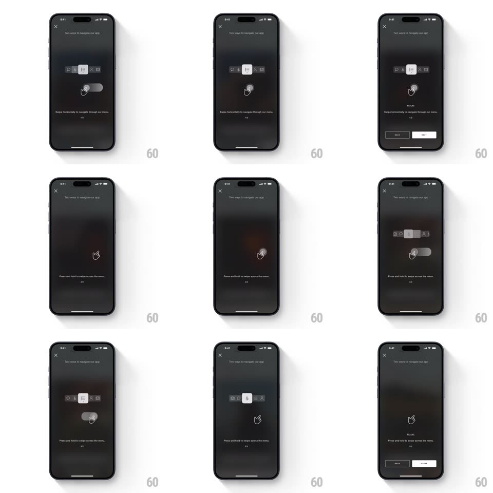

Media
Frame-by-frame

Rebuild this interaction 1:1: Four Seasons' navigation gestures tutorial - over a dimmed dark interface, step-by-step tips teach the app's menu gestures with animated hand indicators: "Swipe horizontally to navigate through our menu" (a horizontal icon row highlights item to item as the hand drags across) and "Press and hold to swipe across the menu" (the hand presses, the menu slides under it), ending with a Back / Close pair.

Rebuild this interaction 1:1: Four Seasons' navigation gestures tutorial - over a dimmed dark interface, step-by-step tips teach the app's menu gestures with animated hand indicators: "Swipe horizontally to navigate through our menu" (a horizontal icon row highlights item to item as the hand drags across) and "Press and hold to swipe across the menu" (the hand presses, the menu slides under it), ending with a Back / Close pair.
## Integration
Integration: stack-agnostic spec - springs given as stiffness/damping, timed motions as duration + curve; map every value to your framework and animation library of choice.
## Scene
Dark full-screen overlay ("Two ways to navigate our app" header, X close): a horizontal menu strip of circular icons with one highlighted white item, an animated white hand glyph, a caption line per step, and a page indicator ("1/2", "2/2"); final frame adds Back and Close buttons.
## Motion spec
Pattern: animated hand-demo over a live menu strip.
- Step 1: the caption and hand fade in (250ms); the hand loops a horizontal swipe - it drags across the strip (240px, 1s, ease-in-out) while the menu's highlight jumps item to item in its wake (white pill behind the active icon, 150ms per hop); loop repeats every ~2s.
- Step 2 ("Press and hold"): the hand descends and presses (scale 0.9, 200ms), holds for 400ms, then the whole menu strip slides horizontally under the held hand (spring ~340/24, 500ms) revealing more icons; release, reset, loop.
- Page indicator advances with each step (crossfade, 200ms).
- Final step: Back and Close buttons slide up (translateY 12px + fade, spring ~380/26, 250ms).
## Calibration
- The hand is a simple white glyph - high contrast against the dark overlay.
- Each loop is self-resetting: the strip returns to its start position before the next demo pass.
## Reduced motion
Hand appears static at mid-gesture; menu states crossfade (200ms).
## Don't miss
- In step 1 the highlight moves and the strip stays; in step 2 the strip moves and the hand stays - the two gestures are mechanically distinct.
- The loop timing is slow enough to read the caption before watching the hand.